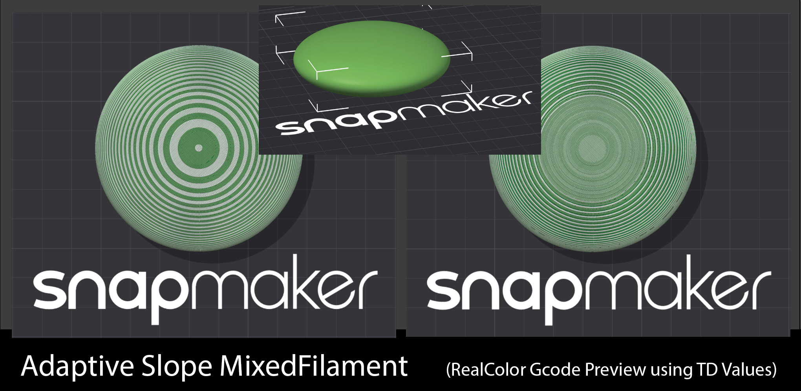

§11 · §23 — Structure
Height
Two gizmos that share an idea. Instead of typing a number into a box and finding out after slicing where the transition landed, you draw a curve on top of the object's real layer bands, and the layer you are affecting is visible while you affect it.
- Libre Mode
- §11 since 2.3 · §23 since 2.4.3
Precision Adaptive Layer Height
Where Left gizmo toolbar›Precision Adaptive Layer Height
The stock "Layers editing" brush is a paint tool: you click and drag over the object and it pushes the layer height up or down. It is fast and it is imprecise, and there is no way to say "I want exactly 0.28 mm at Z = 14.2 mm". This gizmo replaces it with an exact, point-based curve editor.
The stock brush
Paint the height on. No numbers, no control points, no way to reproduce what you did on the next version of the model.
The curve editor
Control points at an exact Z and an exact height, dragged or typed, with a tension per segment for the shape in between. It reproduces.
The icon is always visible in the toolbar but stays greyed out until Libre Mode is active. It never affects the stock Variable Layer Height dialog or brush, which remain untouched and fully usable with Libre Mode off.
The curve editor
Click in the graph to add a point, drag to move one, right-click to delete it. The horizontal lines are the layers you are going to get, recomputed from the curve as you drag, so the bands you are looking at are the bands that will print.
How to use it
- Enable Libre Mode, select a single object, open the gizmo.
- The panel shows a graph: layer height across, Z up the object's height. The bottom point (grey) is the object's fixed first layer and cannot be moved or deleted. The top point (amber) can be dragged in height only.
- Click anywhere else to add a point, drag any non-bottom point to move it, right-click a point to delete it.
- With three or more points a tension slider appears per segment:
0is a straight line, identical to the engine's default linear interpolation, and1is a smooth monotone curve through the segment. Monotone means it never overshoots past the two points' heights, so it cannot spike outside your min and max layer height. - While dragging or hovering a point, a translucent band lights up on the object itself, showing exactly which Z slice you are affecting: teal on hover, amber while dragging. A small label over the point shows the exact Z and layer height live.
- Every discrete edit is a normal undo step and triggers a re-slice, the same as the stock brush.
Current limits: min and max layer height are read-only, taken from the printer and nozzle, with no per-object override yet. Reopening the gizmo on an object that already has a very dense profile, for instance one painted with the old stock brush, falls back to a flat two-point start rather than importing hundreds of points. And there is no result preview from the classic Adaptive and Smooth buttons: this is a separate, precise path rather than a replacement for those.
Adapt to Color WIP
Layer height and colour are not independent. The height you slice at changes how the colour reads on the part, and nothing in a stock slicer tells you that. Tick Adapt to Color and the height editor shades the ranges where your colour setup actually works.
| Shading | What it means |
|---|---|
| Red on the right | Pattern-resolution ceiling. Above the mix band, following the "Dithering cadence" upper bound in your print settings, a cycle or gradient pattern gets too coarse to read as a blend. Applies object-wide to anything with a mixed pattern, paint or Sandwich. |
| Red on the left | Colour-fidelity floor, Sandwich zones only. Where the mesh has a plausible Sandwich top surface, the filaments' TD sets a minimum thickness: thinner than that and a translucent pass washes out over what is below. It never applies outside real Sandwich zones, so a plain Cycle object shows only the ceiling. |
| Green line | The optimal height per Z, with a Snap to optimal button that rewrites every editable point of your curve to it in one click. |
Dragging stays completely free within the nozzle limits. The guidance is visual, so a point sitting in a red zone turns orange, and the emitted profile is hard-clamped to the safe range only at commit. What reaches the slicer always respects the colour. The info panel shows the colour-safe range for whichever point you hover or drag.
Slope Pattern Recolor experimental
A problem no stock slicer addresses. On a sloped surface each layer's contour steps inward,
and that staircase ledge exposes the interior perimeter rings to view. Those
rings print in whatever the layer's colour happens to be, so a clean MixedFilament banding
degrades into noise exactly where the model curves. The wider the step
(d = layer height × tan(slope)), the more rings show: at 0.2 mm on a steep slope
you are already looking at one or two.
With Slope recolor on, the gizmo scans the mesh for slope bands, computes at your committed layer heights how many interior rings each band exposes, and stores a per-object recolor plan in the 3MF, undoable, erased when you untick. At slice time:
- the external perimeter is never touched, because its per-layer alternation is the pattern's visible rhythm and it keeps printing exactly as your recipe dictates;
- the exposed interior rings print a side-by-side combination of the recipe's own components, chosen by ΔE2000 colour distance so the ledge's blended appearance matches the recipe's intended mix. The step fills with the mix instead of a random solid.

The violet shading in the height editor shows which heights expose rings at each Z. Drag the curve below the violet edge and thin layers cover the slope instead. The two strategies are complementary: fine layers shrink the ledge until nothing extra shows (slow, maximum quality), slope recolor accepts tall layers and colours what shows (fast, good finish at 0.12–0.2 mm). Use the violet shading to choose per zone.
Limits, and it does need broad print testing: it is best on surfaces with one dominant slope, and two very different slopes sharing a height range currently share one plan with the steeper one winning. The plan is per height band rather than per region, so on a model sloped on one side and vertical on the other at the same Z, the vertical side's interior rings recolor too. Invisible there, but it costs toolchanges. And a Sandwich-on-a-slope zone still prioritises the thick-top Sandwich; the panel warns when you are in one.
Height Adaptive Effects
- Libre Mode
- per object, travels in the 3MF
- 2.4.3
Where Left gizmo toolbar›Height Adaptive Effects
Orca can already vary settings by height: that is what height range modifiers are. The problem is that you type a Z into a box and find out where the transition actually landed after slicing. This gizmo turns it around, and it is the same idea as the layer height curve applied to any setting.

Building the list
The panel starts empty. Press Add, pick an effect, and it joins this object's effects, so the panel only ever shows what you actually use no matter how many effects exist. The trash button on a row removes the effector completely, curve and all; Clear at the bottom empties the curve but keeps the effect in the list. Each row carries a small preview of its own curve and its point count, which is what keeps a list of similarly-named effects readable.
Drawing the curve
Click to add a point, drag to move, right-click to delete. Height runs up the left edge and the effect's value across the top. Hovering anywhere gives a live readout of the Z you are on and what the curve is worth there, so you do not have to grab a point to read a number. Dragging a point highlights the matching band on the object in 3D. Open Z points opens a numeric table, one row per point, with the layer number each Z lands on. Presets seed a shape for the effects that have sensible ones, and Refresh layers re-reads the bands after you change the adaptive layer height profile.
Z is measured from the bottom of the object, not from the bed. If you print with a raft, the raft is not part of this axis.
Steps or ramp, and the number that decides
Steps holds the value constant inside each band and changes it in one jump at a layer boundary, with every point snapping to a real layer. Ramp varies it continuously.
Steps is not just the cautious option. Sparse infill deliberately keeps its spacing constant across layers so the lines stack on the ones below; a width that drifts walks every line off its support. But what breaks the stacking is the drift between consecutive layers, which depends on how steep your curve is rather than on it being a curve at all. A slow ramp moves each layer by a fraction of a micron. So instead of forbidding ramps, the panel measures yours:
- Line shift per layer shows how far the infill of one layer lands from the one below, at the far edge of the object, as a percentage of the line width. It turns amber above roughly 25%.
- Staircase turns your ramp into that many layer-aligned bands, keeping the shape while giving the lines back their constant spacing inside each band.
A shortest-band warning also appears in steps mode: under about four layers, the jump costs more than it gives.
The effects
| Effect | What it is for |
|---|---|
| Sparse infill width | Thin lines low down where the infill has to support the solid above it, thick lines deep inside where nothing rests on them. Same density, same material, less time. |
| Outer wall width / Inner wall width | Wall thickness following the height. |
| Fuzzy skin thickness | Texture that is born and dies with the height. |
| Fuzzy skin point distance / noise scale / octaves / persistence | The texture's character changing with height, not only its depth. |
Only the three line widths that stack are offered. Internal solid infill and top surface were wired up, looked at, and deliberately taken back out: a ramp there varies the width of the very surfaces the eye reads as flat, which is not something a print wants.
- Fuzzy skin thickness reaching 0 switches the fuzzy skin off for that layer rather than merely flattening it. A zero-amplitude fuzzy would otherwise still resample every perimeter into thousands of points: same printed result, much fatter G-code.
- The curves scale fuzzy skin, they do not turn it on. If fuzzy skin is off for the object, the panel says so rather than letting you slice and find nothing changed.
- A setting driven by a curve is greyed out in the object's settings panel, so the same value is never set from two places at once.
- A curve needs at least two points to mean anything. One point is a constant, which is what a plain per-object override is for.
The catch
- Both are Libre Mode only.
- Every edit is a re-slice. Same as the stock brush, and on a big model that adds up while you are tuning.
- Min and max layer height are read-only, taken from the printer and nozzle. No per-object override yet.
- A dense existing profile does not import. Reopening the gizmo on an object painted with the old brush gives you a flat two-point start.
- Slope recolor costs toolchanges on regions where the recolor is invisible, because the plan is per height band rather than per region.
- Adapt to Color and Slope recolor are both WIP and want broad print testing.